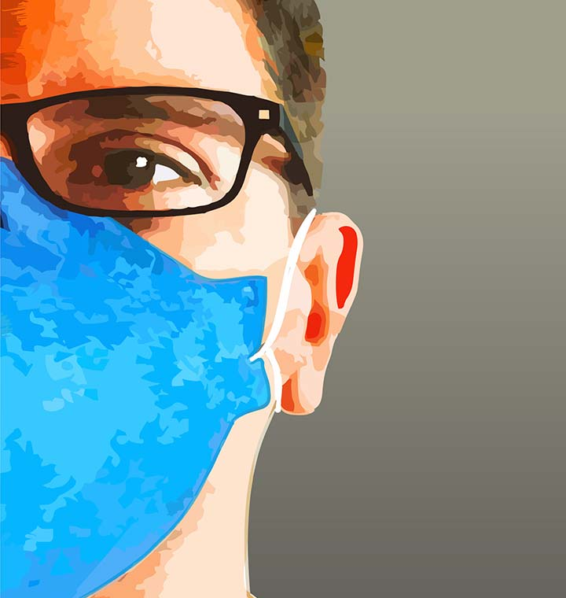

Módulo 2 | Aula 2 O cuidado e o autocuidado no contexto da promoção da saúde e prevenção de doenças
Tópico 2
Cuidado, autocuidado e autocuidado apoiado como estratégias para promoção da saúde

O campo da Saúde Coletiva, quer seja em suas bases epistemológicas ou em sua práxis, tem considerado multicompreensões acerca do processo saúde – doença – cuidado na busca por modelos e formas de intervenção eficazes (CRUZ, 2009). Apesar das diferentes dimensões de cuidado em saúde que passam por influências individuais, coletivas, culturais, sociais, ambientais, econômicas, políticas e históricas, estas apresentam finalidades em comum, que envolvem a promoção da saúde, a prevenção de doenças e/ou agravos e, mais amplamente, a produção do cuidado nessas dimensões.
O cuidado em saúde pode ser subjetivo por integrar a essência humana e por envolver relações de afeto, vínculo, conforto, preocupação, confiança e segurança. Entretanto, pode ser compreendido ainda como aquele que é ofertado por uma rede social, composta por familiares, amigos e outras fontes informativas. Há também, a compreensão do cuidado realizado pelos profissionais dos serviços de saúde, por meio de protocolos e ações técnicas previstas em Linhas de Cuidado. E ainda, o cuidado em saúde contido nas políticas públicas brasileiras, que buscam estabelecer medidas de melhorias nas condições de saúde da população.
O cuidado em saúde pode também se apresentar sob duas proposições, sendo a primeira quando o objetivo é ofertar os meios para que a pessoa possa ter autonomia para suas decisões em saúde, e o segundo, quando o cuidado acontece por meio de atitudes de superproteção que dificultam ou inviabilizam o protagonismo da pessoa cuidada (BENÍCIO; SOUZA, 2019; LIMA; SÁ, 2013).
Nesses diversos formatos, social e historicamente instituídos, é possível verificar que alguns tipos de cuidado apontam para a dimensão anátomo-clínica, direcionando ações sobre os problemas de saúde do indivíduo, enquanto outros se inserem no campo afetivo, pois consideram a história de vida, afetos, redes sociais e familiares nesse processo de existir e adoecer. A busca pela ruptura com a visão tradicional de cuidado, que incide apenas sobre a primeira dimensão, é percebida pelos estudiosos como o maior desafio para o trabalho e para a efetivação do cuidado em saúde (FRANCO; HUBNER, 2019).
Nesse sentido, para que possa concretizar-se, o cuidado deve ser efetuado de maneira contínua, conforme os ciclos de vida dos sujeitos (GARIGLIO, 2012) e na relação entre seus corpos dimensionais (o anátomo-clínico e o afetivo) com seus sistemas sociais (família, trabalho, amigos), com os profissionais de saúde e os serviços de saúde.
Dimensões do cuidado e suas conexões com o cuidado em saúde:
radio_button_checked
Individual
É o cuidado de si, com autonomia para viver de modo mais pleno.
radio_button_checked
Familiar
É o cuidado realizado na interação com a família, amigos e trabalho.
radio_button_checked
Profissional
É o cuidado realizado a partir da relação com os profissionais de saúde (autocuidado apoiado ou cuidado profissional).
radio_button_checked
Organizacional
É o cuidado realizado nos serviços de saúde, envolvendo a sua organização operacional.
radio_button_checked
Sistêmica
É o cuidado que requer as redes de atenção à saúde (RAS) e as linhas de cuidado, visando a integralidade.
radio_button_checked
Societária
É o cuidado que envolve as políticas públicas e de saúde para o exercício da cidadania (LS).
As dimensões do cuidado são, portanto, essenciais para a aprendizagem, planejamento, implementação e avaliação dos cuidados de si, do autocuidado e do autocuidado apoiado, pois possibilitam a autonomia e o protagonismo das pessoas na promoção da própria saúde. Nesse sentido, quando a pessoa se empodera das formas de cuidado, é possível desmistificar alguns conceitos prévios utilizados em seu modo de vida e conseguir ressignificar comportamentos que acarretam vulnerabilidades. Com tais mudanças, são previsíveis resultados positivos nas condições de saúde que corroborem para a realização do projeto de vida do sujeito, incluindo-se o cuidado integral à saúde.
Nessa perspectiva, de forma que impacte positivamente na autonomia das pessoas e atue sobre os Determinantes Sociais da Saúde (DSS), o cuidado em saúde passa por um papel central da APS, de modo articulado com os demais pontos das Redes de Atenção à Saúde (RAS). Nesse sentido, uma atitude de autocuidado que leve a modos e práticas de vida mais saudáveis, assim como adesão às terapêuticas quando indicadas, não depende apenas da intervenção profissional oportuna, mas da conscientização do usuário sobre sua condição de saúde e suas práticas, de modo a contribuir para que este sujeito adquira mais Literacia para a Saúde, impactando sobre a tomada de decisões compartilhadas em relação à própria situação de saúde.
O autocuidado na prática dos profissionais da APS pode ser percebido em diversos contextos de vida e necessidades das pessoas. Como exemplo, é possível verificar esta relação durante uma visita domiciliar realizada à mulher puérpera. Veja o exemplo:
O autocuidado visa o autogerenciamento da saúde, significando muito mais do que dizer o que se deve fazer em determinado contexto. Significa reconhecer o protagonismo do sujeito enquanto agente central do seu processo de cuidado, pois torna-se a âncora de cooperação com os profissionais de saúde na definição dos problemas prioritários, das metas e do planejamento singular que irá monitorar os resultados a partir das ações programadas de modo colaborativo. Nessa ótica, os profissionais de saúde tornam-se parceiros dos sujeitos na atenção à saúde, à medida que compartilham suas impressões, propõem medidas terapêuticas e apoiam o sujeito em suas ações cotidianas adiante (MENDES, 2012).
Já o autocuidado apoiado é definido como a realização contínua de ações educacionais e de intervenção de apoio profissional visando ampliar a confiança e as habilidades das pessoas quanto ao gerenciamento das próprias questões de saúde, tendo em vista o monitoramento das condições cotidianas, a definição de objetivos e aqueles que estarão envolvidos no suporte (INSTITUTE OF MEDICINE, 2003; MENDES, 2012). Significa, então, um processo colaborativo entre os profissionais das equipes de APS e as pessoas da comunidade, mediante o uso de estratégias conjuntas para definir os planos de cuidado e auxiliar na identificação e superação das barreiras que se antepõem ou que apareçam ao longo do processo.
Medidas para que o autocuidado apoiado
seja efetuado no âmbito da ESF
- Treinar os profissionais de saúde para que colaborem com os usuários no estabelecimento de metas para o autocuidado;
- Utilizar instrumentos de autocuidado baseados em evidências clínicas, como a escuta qualificada, a entrevista motivacional e o uso de protocolos clínicos validados, que estimulam as pessoas a se expressarem e tornarem-se proativas;
- Utilizar estratégias grupais;
- Procurar apoio por meio de ações educacionais, informações e meios físicos;
- Buscar recursos da comunidade para que as metas de autogerenciamento sejam obtidas.
Fonte: Baseado em MENDES, 2012